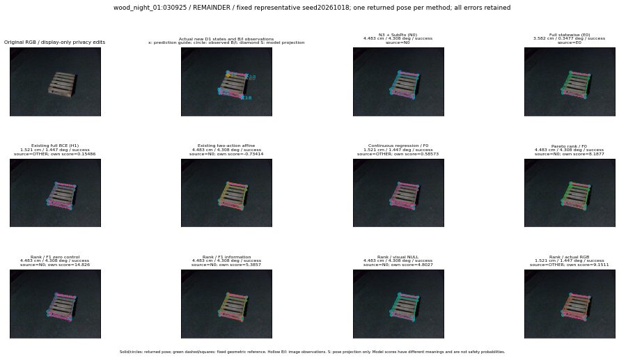

실선은 반환 자세, 초록 점선은 고정 기하 참조입니다. S는 영상 관측이 아닙니다. 점수는 모델별 의미가 다르며 보정된 안전 확률이 아닙니다. 개인정보 처리는 표시 사본에만 적용했습니다.
| 방법·seed | 위치 / 회전 / 공동성공 | 실제 출처 | 선택 후보 | 각 모델 자체 점수 |
|---|---|---|---|---|
| N0 | 4.483 cm / 4.308 deg / success | N0 | N/A | N/A |
| E0 | 3.582 cm / 0.3477 deg / success | E0 | N/A | N/A |
| E0_REGENERATED | 3.582 cm / 0.3477 deg / success | E0 | E0_REGENERATED | N/A |
| POSEFIX_SUBPIX_PF_ANCHOR | 4.016 cm / 4.434 deg / success | OTHER | N/A | N/A |
| POSEFIX_SUBPIX_YOLO_ANCHOR | 4.016 cm / 4.434 deg / success | OTHER | N/A | N/A |
| D1_H1_MLP_s20261018 | 1.521 cm / 1.447 deg / success | OTHER | G10/ORIGINAL_WD/selected | 0.15486149489879608 |
| D1_H1_MLP_s20261019 | 1.521 cm / 1.447 deg / success | OTHER | G10/ORIGINAL_WD/selected | 0.009862486273050308 |
| D1_H1_MLP_s20261020 | 1.521 cm / 1.447 deg / success | OTHER | G10/ORIGINAL_WD/selected | -0.270977646112442 |
| D1_H1_PAIR_MLP_s20261018 | 3.582 cm / 0.3477 deg / success | E0 | E0_REGENERATED | -1.5598329305648804 |
| D1_H1_PAIR_MLP_s20261019 | 4.483 cm / 4.308 deg / success | N0 | N0 | -1.390229344367981 |
| D1_H1_PAIR_MLP_s20261020 | 4.483 cm / 4.308 deg / success | N0 | N0 | -1.3806740045547485 |
| D1_H1_PAIR_ROLE_AFFINE_s20261018 | 4.483 cm / 4.308 deg / success | N0 | N0 | -0.7341368198394775 |
| D1_H1_PAIR_ROLE_AFFINE_s20261019 | 4.483 cm / 4.308 deg / success | N0 | N0 | -0.9014263153076172 |
| D1_H1_PAIR_ROLE_AFFINE_s20261020 | 4.483 cm / 4.308 deg / success | N0 | N0 | -0.7124091982841492 |
| R_CONT_F0_s20261018 | 1.521 cm / 1.447 deg / success | OTHER | G10/ORIGINAL_WD/selected | 0.5857329368591309 |
| R_CONT_F0_s20261019 | 1.521 cm / 1.447 deg / success | OTHER | G10/ORIGINAL_WD/selected | 0.6502172350883484 |
| R_CONT_F0_s20261020 | 1.521 cm / 1.447 deg / success | OTHER | G10/ORIGINAL_WD/selected | 0.5772546529769897 |
| R_ORDER_F0_s20261018 | 4.483 cm / 4.308 deg / success | N0 | N0 | 8.187701225280762 |
| R_ORDER_F0_s20261019 | 1.521 cm / 1.447 deg / success | OTHER | G10/ORIGINAL_WD/selected | 2.3730416297912598 |
| R_ORDER_F0_s20261020 | 1.521 cm / 1.447 deg / success | OTHER | G10/ORIGINAL_WD/selected | -3.032003402709961 |
| R_ORDER_F1_ZERO_s20261018 | 4.483 cm / 4.308 deg / success | N0 | N0 | 14.825818061828613 |
| R_ORDER_F1_ZERO_s20261019 | 1.521 cm / 1.447 deg / success | OTHER | G10/ORIGINAL_WD/selected | 6.767744064331055 |
| R_ORDER_F1_ZERO_s20261020 | 1.521 cm / 1.447 deg / success | OTHER | G10/ORIGINAL_WD/selected | 7.480020523071289 |
| R_ORDER_F1_s20261018 | 4.483 cm / 4.308 deg / success | N0 | N0 | 5.385695457458496 |
| R_ORDER_F1_s20261019 | 1.521 cm / 1.447 deg / success | OTHER | G10/ORIGINAL_WD/selected | 7.615989685058594 |
| R_ORDER_F1_s20261020 | 1.521 cm / 1.447 deg / success | OTHER | G10/ORIGINAL_WD/selected | 1.8730888366699219 |
| V_ORDER_NULL_s20261018 | 4.483 cm / 4.308 deg / success | N0 | N0 | 4.802748203277588 |
| V_ORDER_NULL_s20261019 | 1.521 cm / 1.447 deg / success | OTHER | G10/ORIGINAL_WD/selected | 2.889671802520752 |
| V_ORDER_NULL_s20261020 | 1.521 cm / 1.447 deg / success | OTHER | G10/ORIGINAL_WD/selected | 4.090150833129883 |
| V_ORDER_RGB_s20261018 | 1.521 cm / 1.447 deg / success | OTHER | G10/ORIGINAL_WD/selected | 9.151123046875 |
| V_ORDER_RGB_s20261019 | 3.582 cm / 0.3477 deg / success | OTHER | G13/ORIGINAL_WD/endpoint/27 | 2.6528451442718506 |
| V_ORDER_RGB_s20261020 | 1.521 cm / 1.447 deg / success | OTHER | G10/ORIGINAL_WD/selected | -7.160977840423584 |